Nyttig eller verdifull flora
Velg en av de følgende, eller lag en ny type flora Å lage ny flora som spillerpersonene kan oppdage.
Uansett bør du ha i tankene når og hvor spillerpersonene kommer over dette. Hvis du presenterer noe nyttig, bør det være nyttig nå (kanskje med litt omhu eller innsats). Ikke gi dem et epletre om vinteren og påstå at det er nyttig. Hvis du presenterer noe verdifullt, bør det enten være noe de kan høste nå, eller noe de realistisk sett kan komme tilbake og hente senere.
Villmat
Sopp, morkler, asparges, bladgrønnsaker, løvetann, alle slags bær, kirsebær, plommer, epler, bønner, nøtter, løker, rotknoller osv.
Kan sanke ×◇ proviant ( bruk hver). Om du vil, kan du slå for å bestemme hvor mye innsats som kreves og/eller hvor godt det smaker.
Gift
Grønn fluesopp, skarntyde, belladonna, munkehette, revebjelle, ildlilje, oleander, barlind, de gale delene av mange spiselige planter/sopper eller legeurter osv.
Kan sanke doser (farlig). Om du vil, kan du også slå hver for styrke, hvor raskt den virker, og hvor lett den er å gi noen. En dyktig urtekyndig kan foredle den og gjøre den sterkere, raskere eller lettere å bruke.
Legeurter
Som grøt, til å tygge, røkelse, te, ekstrakt, eterisk olje osv.
- Lindrer skader/verk; brukes i stedet for forsyninger for å Komme til Krefter ( bruk)
- Et middel mot en svakhet, sykdom, infeksjon eller gift ( bruk)
- Verdifull i ◇◇ store mengder for en dyktig urtekyndig (Verdi 1), kilden til en medisin (eller en gift)
Nyttige materialer
- Slyngplanter som kan brukes som tau
- Ungtrær, gode til å sette snarer
- Ungtrær, rette og solide, gode til piler/buer/spydskaft
- Stort tre, veltet i Storskogen, en god kilde til tømmer
- God opptenning (tørre blader/barnåler/ kvister, bjørkenever osv.)
- Tørr ved/torv til brensel
Eksempler

Lysbær (Brightberry)En tornet busk med deilige bær som gløder med et mykt, gyllent lys (hånd). Om våren lukter den som honningkaker i ovnen. Høst bærene som proviant ◇ (3 bruk, skjør), men de brenner bort i løpet av noen timer. Grav opp en ◇◇ liten busk, sett den i potte og stell den til den blir frisk (vanskelig); kjøpmenn betaler godt for den (Verdi 2).
Sovende elghjerte (Sleeping elksheart)
En kjempesopp, noen ganger stor som et hus, som finnes i mørke skoger. Fyller luften med lammende sporer (innåndes); myceliet fordøyer ofrene. Samle sporene forsiktig for å bruke dem som gift (farlig, Verdi 1). Brenn hatten for å ødelegge sporene, skjær den opp og mett en hel by med den ( Overskudd, ubevegelig, Verdi 2).
Fiolett lotus (Violet lotus)
En lilje som vokser alene langs elver/ bekker i lune bakevjer. Pust inn de brente kronbladene for å stille spillederen et spørsmål fra Søke Innsikt om hvilken som helst situasjon du ønsker. En tinktur av blomsten gir en nydelig parfyme (Verdi 1).
Vridd furu (Twisting pine)
Et eviggrønt tre som dreier seg mens det vokser, slik at stammene blir vridde. Kvaen renner fritt når man tapper den, men stivner fort med mindre den fylles på flaske og beskyttes mot luft.
Bruk en flaske i stedet for forsyninger for å Komme til Krefter (forsegler sår, flasser av noen dager senere). Høst en krukke (Verdi 1) til bruk som tetningsmiddel eller ◇ som glasur på keramikk.
Vantas Blad (Vanta's Blade)
En lav urteplante med brede, bladformede blader som suger opp lys.
Flekker med planten ser ut som hull i virkeligheten. En pung kan gjøres om til et fyldig fargestoff, ◇ blekk eller maling (Verdi 2), men Åsfolket og manmarchfolket mener den er forbannet og brenner flekker med den (og dem som bærer den) med en gang de ser den.
Hjortetre (Hartwood)
Et lite tre med en særpreget tograiners form, som vokser på toppen av steinete fremspring. Klatre opp, hogg av en gren og brenn den; smør asken på huden som vern mot besettelse.
Snøglør (Snowembers)
Vakre blomster som bare finnes på visse snødekte enger i Huffeltindene (Huffel Peaks) Huffeltindene. Kronbladene er spiselige og varme, selv midt på vinteren, men de blir til grøt kort tid etter at de er plukket. Kan høste proviant med noen timers innsats; de som spiser dem, blir røde i kinnene og regnes som å ha på seg varme klær det neste døgnet eller så.
Spørsmål
- Hva er særpreget med den? Hvordan fikk du øye på eller kjente den igjen?
- Hva blir den (noen ganger) kalt?
- Hvem lærte deg å kjenne den igjen/bruke den?
- Hvilken overtro henger ved den?
- Hvordan ble denne planten til, ifølge historiene?
- Hvorfor mener man at den er umulig å dyrke?
- Hvilken fugl, hvilket kryp eller insekt spiser den/bor i den/pollinerer den/sprer den?
- Hvem hjemme ville blitt mest begeistret over dette funnet?
Dyrking
Hvis spillerpersonene vil dyrke en nyttig eller verdifull flora, Legger de en Plan. Noen eksempler på krav:
Slå også fast fordelene ved å lykkes, for eksempel:
- Tilgang til en ny særlig eiendel
- Ekstra Overskudd i en bestemt årstid
- En handelsvare (Verdi 1-2) som produseres hver vår/sommer/høst/vinter
- Ekstra HP gjenvunnet når man Kommer til Krefter
- Ekstra folk mettet når du bruker et kokesett og forsyninger
Å lage ny flora
Tenk først over hvor den finnes, og hvordan og hvor spillerpersonene kommer over den.
Med det i tankene bestemmer du hvordan den er nyttig/verdifull, eller lar noen slå Skjebneterningen.
| 1-6 | … i felt, her og nå |
|---|---|
| 7-10 | … for folk hjemme eller i et annet samfunn |
| 11-12 | … både i felt, her og nå, og for folk hjemme eller i et annet samfunn |
| 1-3 | ×◇ proviant ( bruk) |
|---|---|
| 4-5 | Som grøt/medisin/middel; brukes i stedet for forsyninger for å Komme til Krefter eller behandle en svakhet ( bruk) |
| 6 | Fyller på Beholdning i en Velsignets hellige pung |
| 7-8 | Dekker et behov (for ly, brensel, opptenning, vann, materialer osv.) |
| 9-10 | Gir en fordel (som en firkløver som legger 1 til ett enkelt viktig kast, eller marinøkkel som renser sinnet for fortryllelse) |
| 11-12 | Gir en vei videre eller en løsning på et problem (sopp for å komme i kontakt med en ånd, et ugress som skjuler lukten din, giftig frukt som kanskje kan beseire en fiende, åte til en felle osv.) |
| 1-2 | En gave, en kuriositet, noe pent eller hyggelig (Verdi 0) |
|---|---|
| 3-4 | Materiale for vanlige håndverk /yrker (fiber, tre, medisin, olje, salt, garvestoff osv., Verdi 1) |
| 5 | En luksus (krydder, parfyme, fargestoffer, sminke osv., Verdi 1) |
| 6 | Noe lyssky (et rusmiddel, en gift osv., Verdi 1) |
| 7 | Et offer, en amulett, et vern, en mottrolldom osv. (Verdi 1) |
| 8 | Mat for mange mennesker (teller som 1 Overskudd, ubevegelig, Verdi 2) |
| 9 | Råmateriale til en bygdeforbedring, som et vognlass med tømmer (ubevegelig, Verdi 2) |
| 10 | Materialer av høy kvalitet (klart og varig fargestoff, kraftige legeurter osv., Verdi 2) |
| 11 | Et under (glødende blomster, svever i luften, fasjonabelt farlig osv., Verdi 2) |
| 12 | Et legendarisk stoff (forlenger ungdommen, fanger viljen, gir profetier osv., Verdi 3) |
Hvis det ikke allerede er åpenbart, velger du eller slår for formen den er nyttig eller verdifull i.
| 1 | Som en liten gjenstand |
|---|---|
| 2 | Som en pung full ◇ |
| 3-4 | Som en ◇◇ sekk full eller en bunt |
| 5-6 | I store mengder (ubevegelig) |
| 7-9 | Slå igjen, men det krever stor innsats å høste/bearbeide/ gjøre den verdifull |
| 10-12 | Slå igjen, men den er også skjør og/eller tungvint |
Velg deretter eller slå for egenskaper og et særtrekk.
| 1 | Tiltrekker/huser et skadedyr eller en fare |
|---|---|
| 2 | Farlig å høste/håndtere |
| 3 | Skadelig for jordsmonnet/økosystemet |
| 4 | Grusom smak/lukt/konsistens |
| 5 | Kresen/ømfintlig/blir fort dårlig med mindre den bearbeides riktig |
| 6 | Omgitt av overtro/sies å være forbannet/et dårlig varsel |
| 7 | Knyttet til en bestemt gud/ vesen/helt/legende/historie |
| 8 | Lett å arbeide med |
| 9 | Særlig sterk/holdbar/kraftig |
| 10 | Deilig/aromatisk/vakker/ smidig/på annen måte behagelig |
| 11 | Sjelden/legendarisk/antatt utdødd |
| 12 | Velg eller slå for enda en måte den er nyttig/verdifull på |
| 1 | Finnes alltid sammen med en type farlig vekst |
|---|---|
| 2 | Finnes alltid sammen med (skjult av?) en annen, mindre nyttig vekst |
| 3 | Vokser/blomstrer bare under bestemte/ uvanlige/usannsynlige forhold |
| 4 | Vokser i et bestemt mønster |
| 5 | Tiltrekker/huser et harmløst insekt/fugl/kryp/ånd |
| 6 | Intrikat mønster/overflate |
| 7 | Særpreget form/oppbygning av blader/stilker/stamme/blomster/løker |
| 8 | Blader/blomster/frø/frukter/belger som ligner noe annet |
| 9 | Sterk, særegen lukt |
| 10 | Klar/skrikende/uvanlig farge |
| 11-12 | Slå to ganger |
Ut fra alt dette, og hvor og hvordan den finnes, bestemmer du nå:
Hva er det? Velg 1: Lav, mose, alge, sopp, hattsopp, bregne, gress, starr, plante, ugress, slyngplante, klatreplante, krypende plante, tornebusk, busk, sukkulent, løvtre (pil, ask, eik, or, bjørk, alm, frukttre, lønn, kastanje, rogn, valnøtt osv.), bartre (seder, furu, edelgran, einer, sypress, gran, barlind osv.).
Hvilken del er nyttig/verdifull? Velg 1-4:
Stamme, stilk, skudd, gren, kropp, ved, kjøtt, bark, skall, rot, rotknoll, torn, blad, frukt, gresskar, nøtt, frø, spore, blomst, pollen, belg, kongle, sevje, olje, kvae, aske osv.
Hvordan tilberedes/brukes den? Velg så mange som gir mening: Spises, tygges, gnis inn, brukes som grøt, brennes, røykes, males, pulveriseres, flås, bløtlegges, kokes, trekkes, reduseres, gjøres til tinktur, blandes med __, skjæres ut.
Hva heter den? Bland og kombiner ord slik det gir mening (som «ravneaske» eller «hekseblad»). Kanskje oversetter du navnet ut fra hvem som ga det (f.eks. til walisisk for en plante fra traktene rundt Stonetop).
høst, bjørn, klokke, bær, bitter, svart, blomst, ånde, lys, borre, katt, hule, klo, kløver, kråke, dag, syre, hund, drake, farge, elg, øye, fjær, finger, lin, folie, rev, gull, større, grønn, hår, hengende, hjort, hjerte, skarntyde, hette, horn, eføy, mindre, lilje, lotus, jordmor, mynte, tåke, møll, måne, natt, gammel, orkidé, pute, pote, pepper, kronblad, valmue, pottemaker, prest, røyk, regn, ravn, rød, elv, rose, ru, skygge, sølv, skunk, himmel, glatt, slange, flekket, vår, sol, søt, stjerne, garver, tistel, tå, tunge, fiol, vann, hvit, vill, visnende, vinge, heks, urt, alt fra listene ovenfor, __.